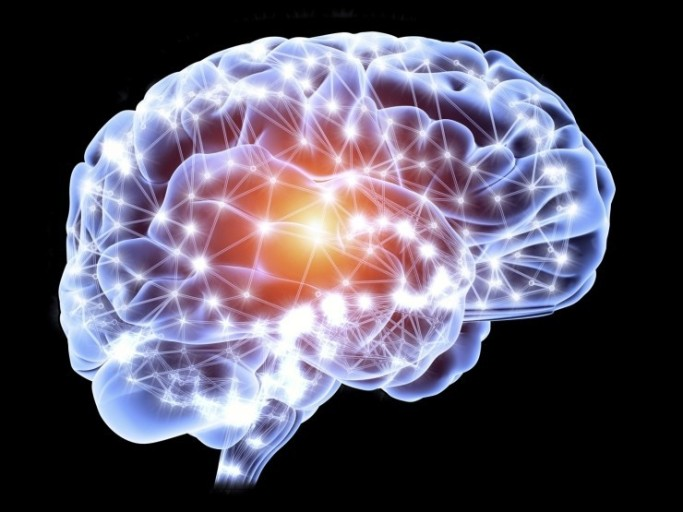

학습(學習) 또는 배움은 본능적인 변화인 성숙과는 달리, 직간접적 경험이나 훈련에 의해 지속적으로 지각하고, 인지하며, 변화시키는 행동 변화이다. 환경의 변화에 대한 생체의 >일반적 적응과 신체적인 피로, 손상 등 일시적인 동기 부여 등에서 초래된 행동의 변화와는 구별된다. 학습과 공부가 대비되는 점은 학습이 외부적인 교육이나 현상에 대해 영향을 받는 데 비해 공부는 자발적인 면이 강하다. 고전적 조건형성과 도구적 조건형성이 대표적인 예이다.